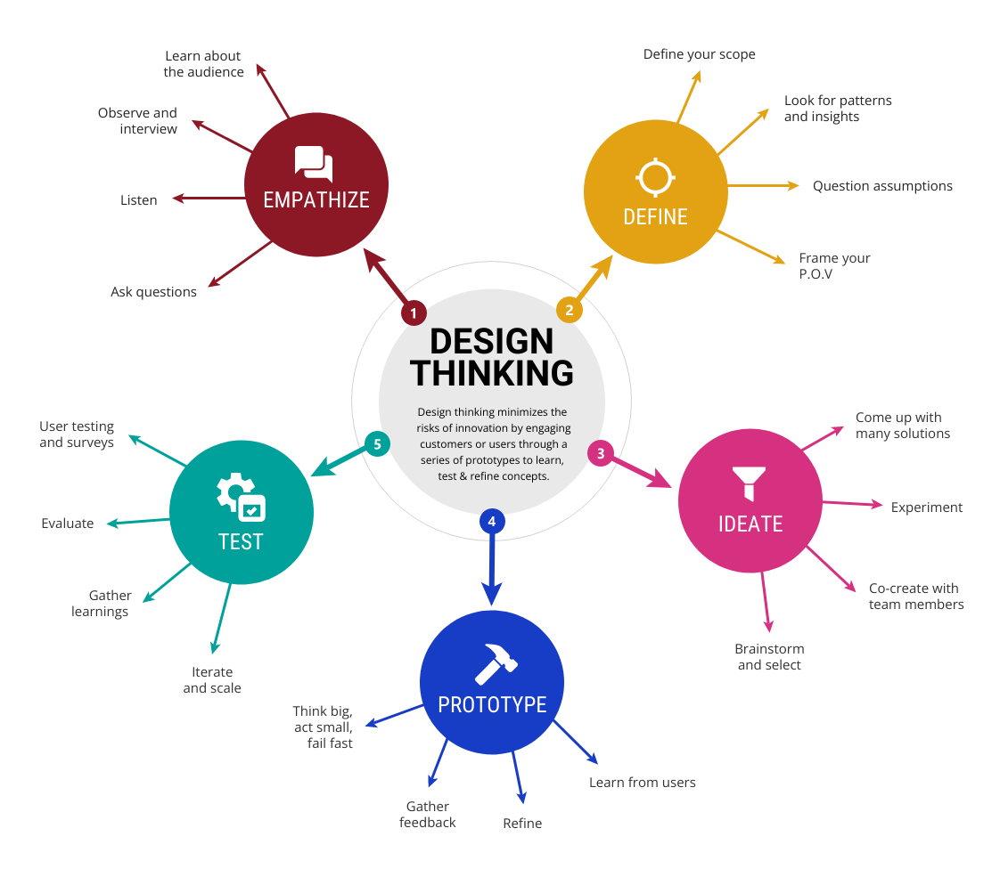

Science of Design
Marc Urbealis ~ Novemeber 19th, 2023.
Introduction
Design, a multifaceted discipline at the intersection of art and functionality, relies on a set of principles that guide creators in crafting visually stunning and purposeful solutions. This essay aims to undertake a thorough investigation into the best design principles, tracing their origins, delving into the contributions of influential figures in the design world, and exploring their relevance across various industries. Additionally, we will scrutinize the implications of design decisions on software engineering, ensuring that the principles align with optimal performance. Furthermore, we will touch upon the intersection of design and marketing, highlighting how effective design practices contribute to successful marketing strategies.
Hierarchy and Visual Organization: The Guiding Hand of Design Masters
The principle of hierarchy, a linchpin in design, traces its roots to pioneers like Paul Rand and Josef Müller-Brockmann. Paul Rand, known for his iconic logos, emphasized the importance of visual communication and the deliberate organization of elements to guide the viewer. Müller-Brockmann, a Swiss graphic designer, contributed to the development of grid systems, providing a structured foundation for hierarchy. Today, these principles remain paramount in design as they facilitate clear communication and enhance user experience. When considering software engineering implications, a well-structured hierarchy ensures that the design is not only visually appealing but also conducive to efficient coding and functionality.
Balance and Symmetry: The Dance of Aesthetics and Stability
Design principles of balance and symmetry find resonance in the works of Bauhaus artists like Wassily Kandinsky and Piet Mondrian. Kandinsky's exploration of color theory and Mondrian's iconic geometric compositions exemplify the harmony achieved through balanced design. In the digital age, these principles have implications for software engineers. Maintaining balance in a user interface, for instance, ensures that the design translates seamlessly across various screen sizes. Asymmetry, when used purposefully, can introduce dynamism, but it requires careful consideration to prevent unintended consequences for the user experience.
Contrast and Emphasis: Guiding Focus and Creating Impact
Contrast and emphasis, championed by designers like Saul Bass and Massimo Vignelli, play a pivotal role in capturing attention and conveying messages effectively. Bass, renowned for his iconic film posters, understood the power of contrast to evoke emotions. Vignelli, a modernist designer, advocated for clarity through the strategic use of contrast. In the realm of software engineering, considerations for contrast become crucial for accessibility. Design choices must ensure that content is easily readable for all users, including those with visual impairments.
Consistency and Unity: Foundations of Cohesive Design
Consistency and unity, championed by influential figures like Dieter Rams, have become synonymous with effective design. Rams, a product designer for Braun, emphasized the importance of consistency in creating a seamless and reliable user experience. These principles extend into the realm of software engineering, where maintaining consistency in coding practices and design elements streamlines development processes. Unity, both visual and functional, contributes to a cohesive user journey, reducing the likelihood of confusion or frustration.
Simplicity and Minimalism: Less Is More in the Digital Age
The principles of simplicity and minimalism find champions in figures like Jony Ive and Dieter Rams. Ive, Apple's former Chief Design Officer, played a pivotal role in shaping the sleek and minimalistic aesthetics of Apple products. Rams, with his "less but better" philosophy, influenced generations of designers with his minimalist approach. In the context of software engineering, minimalist design not only enhances user experience but also contributes to efficient codebases. Reducing unnecessary elements results in faster loading times and a more streamlined user interface.
User-Centered Design: Bridging Empathy and Functionality
User-centered design, championed by Donald Norman and Jakob Nielsen, revolves around understanding and prioritizing user needs. Norman, a cognitive scientist, emphasized the importance of designing with empathy for users' mental models. Nielsen, a usability expert, introduced concepts like usability testing to ensure user-friendly designs. In the realm of software engineering, prioritizing user needs directly impacts the success of a product. Engineers must collaborate closely with designers to implement features that align with user expectations and enhance overall usability.
Responsive Design and Accessibility: Bridging Gaps and Enabling Inclusivity
The principles of responsive design and accessibility have gained prominence in the digital age. Ethan Marcotte, a web designer, coined the term "responsive web design," advocating for designs that adapt seamlessly to various devices. Accessibility, championed by figures like Aarron Walter and Derek Featherstone, focuses on creating designs that are inclusive and usable for individuals with diverse abilities. In the world of software engineering, these principles are integral to ensuring that applications and websites are accessible to all users, regardless of their device or ability.
Implications for Software Engineers: The Intersection of Form and Function
Software engineers play a pivotal role in translating design concepts into functional and efficient code. Implications for software engineers are far-reaching, encompassing considerations for performance, scalability, and maintainability. The speed and efficiency of a site or application are paramount, and engineers must collaborate closely with designers to implement features that enhance rather than hinder performance. Decisions regarding animations, graphics, and other design elements should be made with careful consideration of their impact on processing speed.
Best Design Practices in Software Engineering:
The best design practices in software engineering align with principles that prioritize efficient code, optimal performance, and a positive user experience. The use of responsive design ensures that applications function seamlessly across devices, accommodating the diverse ways users access digital content. Additionally, a focus on accessibility is crucial to guaranteeing that software is usable by individuals with various abilities. A harmonious collaboration between designers and software engineers is essential to strike the right balance between aesthetic appeal and functional efficiency.
Best Design for Marketing: Marrying Aesthetics and Conversion
Effective design plays a pivotal role in marketing, influencing consumer perception and driving conversion. Principles such as contrast, emphasis, and hierarchy are instrumental in creating visually compelling marketing materials that capture attention and convey a brand message. A consistent visual identity across marketing collateral fosters brand recognition and loyalty. Simplicity in design enhances communication clarity, making marketing messages more digestible for the audience. User-centered design principles ensure that marketing materials resonate with the target audience, resulting in a more significant impact on conversion rates.
Conclusion:
In the ever-evolving landscape of design, the best design principles are not static rules but dynamic guidelines that adapt to technological advancements, user expectations, and societal shifts. From the pioneers who shaped the foundations of design to modern practitioners who continue to push boundaries, the principles outlined above remain relevant and influential across diverse design disciplines. As technology continues to advance, the intersection of design and software engineering becomes increasingly critical, emphasizing the need for cohesive collaboration to create designs that are not only visually stunning but also functionally efficient and user-centric. In marketing, effective design principles are instrumental in capturing attention, conveying brand messages, and driving conversion. By understanding, embracing, and innovating upon these principles, designers, engineers, and marketers alike can contribute to the creation of impactful and enduring solutions in the ever-evolving tapestry of design.